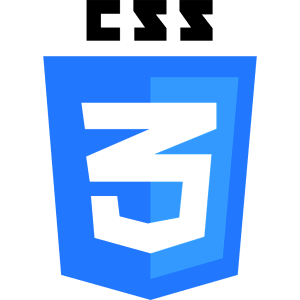
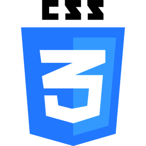

I have a passion for coding and technology, and I am always looking to learn new skills and improve my existing ones. In my free time, I enjoy working on personal coding projects, gaming and playing a variety of musical instruments.
This website serves as a portfolio of my work and a platform to share my thoughts and ideas on various topics related to technology and coding. Feel free to explore the different sections of the website to learn more about me and my projects. If you have any questions or would like to get in touch, please don't hesitate to contact me through the contact page.